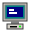
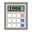
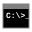

My Computer
My Documents
Recycle Bin
Notepad
Internet Explorer
Minesweeper
READ_ME.txt
DO_NOT_CLICK.exe
My Computer
File
Edit
View
Help
Address:
3½ Floppy (A:)
Local Disk (C:)
My Documents
Audio CD (D:)

Control Panel5 object(s)
Free: 1.24 GB / 2.10 GB
Local Disk (C:)
File
Edit
View
Help
Address:
My Documents
Program Files
WINDOWS
Secret
AUTOEXEC.BAT
5 object(s)
Capacity: 2.10 GB
My Documents
File
Edit
View
Help
Address:
read_me_first.txt
secret_diary.txt
old_memories.jpg
world_cup_1998.jpg
titanic_1997.jpg
Secret Folder
6 object(s)
842 KB
C:\Secret - TOP SECRET
Address:
hackathon_confidential.txt
blueprints.txt
DO_NOT_RUN.bat
3 object(s) (CLASSIFIED)
Untitled - Notepad
New
Save
Save As...
Clear
About
Ln 1, Col 1 | Saved: No
Microsoft Internet Explorer 4.0 - The Lost PC
Home
Google 1998
Geocities
Hackathon 2026
Address:
Google!
Search the web using Google! (Beta - late 1998)
Special Searches: Gandhi Hackathon · IIT Bhilai · Windows 98 · Y2K Bug
Copyright ©1998 Google Inc. Best viewed with 800x600 resolution.
★ ★ ★ WELCOME TO VIKRAM'S CYBER ZONE 1998 - UNDER CONSTRUCTION ★ ★ ★
Welcome to the 90s Web!
You are visitor number:
001337
♫ Currently playing: MIDI file - Darude Sandstorm ♫
🌐 Proud member of the IIT Bhilai Retro WebRing 🌐
[Previous Site] · [Random] · [Next Site]
IIT Bhilai - Gandhi Hackathon 2026
OpenLake × Meraz | Problem Statement: The Abandoned Computer
Judge Evaluation Checklist:
- ✔ Visual Authenticity: Authentic Windows 98 3D bevels, teal desktop & classic icons
- ✔ Interactive Applications: My Computer, Notepad, Explorer, Minesweeper & DOS
- ✔ LocalStorage persistence for Notepad
- ✔ Crazy Easter Eggs: BSOD, Error Cascade, Clippy, Matrix Mode, 56k Dial-Up Sound
- ✔ Responsive across desktop and mobile screens
"You make us laugh and we give you points, deal!!" — Section 04, Problem Statement
Done
Internet Zone
Recycle Bin
Address:
homework_final_FINAL_v2.doc
dialup_modem_screech.wav
y2k_survival_guide.txt
unnamed_secret_plan.exe
4 object(s) | 1.84 MB
Image Viewer
640 × 480 pixels | 24-bit TrueColor
Minesweeper
Game
Help
010
000
Calculator

MS-DOS PromptMicrosoft(R) Windows 98
(C)Copyright Microsoft Corp 1981-1998.
Type 'help' for available retro commands, or 'matrix', 'hack', 'bsod'.
C:\WINDOWS>
Run
Type the name of a program, folder, or document, and Windows will open it for you.
Open:
Control Panel
Display & Sound Properties
CRT Monitor Scanline Overlay:
Sound Effects & PC Chimes:
Desktop Theme Color:
Computer Specs: Intel Pentium II 300MHz, 64MB SDRAM, 2.1GB Quantum Fireball HDD, 56k V.90 Fax Modem.